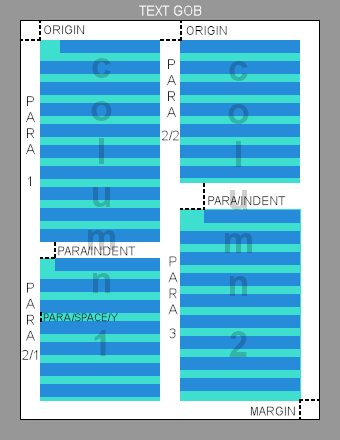

Author: Richard Smolak
Date: 19-Oct-2010
Version: 0.0.8The purpose of this document is to describe the Richt Text Dialect (RTD).
NOTE: This document contains changes and additions that are not implemented in current version of RTD (based on R3 A107 state).
The goal of text rendering in Rebol3 is to be able control:
Use FONT command with font object argument to define Font attributes used by following text. The font object prototype definition is:
system/standard/font: make object! [
name: [string!]
style: [word! block!]
size: [integer!]
color: [tuple!]
bg-color: [tuple! none!]
effect: [block! none!]
]| name | name of the font |
| style | one word or block! of following keywords BOLD, ITALIC, UNDERINE |
| size | font size in pixels |
| color | RGBA text color value |
| effect | block! of text effect dialect that can be applied. (Currently only SHADOW command is supported. See below.) |
Use PARA command with paragraph object argument to define Paragraph attributes which will be used for the following text. The paragraph object prototype definition is:
system/standard/para: make object! [
indent: [pair!]
tabs: [integer! block!]
wrap?: [logic!]
align: [word!]
space: [pair!]
kerning: [logic!]
run-around: [logic!]
]| indent | indentation of the first line in paragraph (horizontal value) and between previous paragraph (vertical value) |
| tabs | width or block of positions used for the TAB character indentation |
| wrap? | turns on/off line wrapping of text |
| align | specifies horizontal text align within the bounds of the paragraph box. Avaliabe words LEFT, RIGHT, CENTER, JUSTIFY |
| space | a pair! specifying glyph(horizontal value) and line(vertical value) spacing |
| run-around | turns on/off paragraph text content runaround GOBs. |
It is possible to have multiple paragraphs defined in one Rich Text block.
Paragraphs are positioned one ofter another vertically. Vertical space between pargraphs is defined by PARA/INDENT/Y values.
Use COLUMNS command(see below) to define how many paragraph columns should be used for paragraph layout.
When the paragraph text reaches bottom boundary of the GOB defined by MARGIN keyword:
or
The image below shows example of 2 columns paragraph layout in a text gob.

Sets font attributes.
The syntax of the command:
FONT font-attributes [object!]
Renders GOB embedded in text.
The syntax of the command:
GOB gob [gob!]
Breaks the text line.
The syntax of the command:
NEWLINE
Sets paragraph attributes.
The syntax of the command:
PARA para-attributes [object!]
Renders text string.
The syntax of the command:
TEXT text [string!]
Sets aliasing mode of rendered text in a GOB.
The syntax of the command:
ANTI-ALIAS state [logic!]
Sets text vertical alignment.
The syntax of the command:
BOTTOM
Sets caret and text selection attributes.
The syntax of the command:
CARET caret-attributes [object!]
The caret-attributes object contains:
make object! [
caret: [block!] ;contains pair of text block! at the string element position and string! at the character position
caret-shape: [block! none!] ;optional DRAW dialect based graphicsused for custom caret shape
caret-color: [tuple! none!] ;optional color for the default caret
highlight-start: [block!] ;contains pair of text block! at the string element position and string! at the character position
highlight-end: [block!] ;contains pair of text block! at the string element position and string! at the character position
highlight-color: [tuple! none!] ;optional color for the selection filled area
highlight-text-color: [tuple! none!] ;optional color for the text inside selection area
]It is possible to define number of columns in the GOB that will be used for vertical paragraph text wrapping.
The syntax of the command:
COLUMNS cols [integer!]
Defines bottom-right offset used for limiting the text from bottom and righ-tmost side of the GOB.
The syntax of the command:
MARGIN offset [pair!]
Sets text vertical alignment.
The syntax of the command:
MIDDLE
Defines top-left offset used for each pargraph text column in a GOB.
The syntax of the command:
ORIGIN offset [pair!]
Scrolls the whole GOB content by amount of pixels in specific direction(s).
The syntax of the command:
SCROLL offset [pair!]
Sets text vertical alignment.
The syntax of the command:
TOP
Sets font BOLD style.
The syntax of the command:
BOLD state [logic!]
or
B state [logic!] Sets text horizontal alignment.
The syntax of the command:
CENTER
Sets font RGBA color.
The syntax of the command:
COLOR font-color [tuple!]
Removes N previous style settings from the command stack.
The syntax of the command:
DROP n [integer!]
Sets font ITALIC style.
The syntax of the command:
ITALIC state [logic!]
or
I state [logic!] Sets text horizontal alignment.
The syntax of the command:
JUSTIFY
Sets text horizontal alignment.
The syntax of the command:
LEFT
Sets text horizontal alignment.
The syntax of the command:
RIGHT
Enables effect for text. (such as SHADOW..others can be added later)
The syntax of the command:
EFFECT [block!]
The syntax of different effects:
SHADOW offset [pair!] color [tuple!] spread [integer!]
Sets font size in pixels.
The syntax of the command:
SIZE font-size [integer!]
Sets font UNDERLINE style.
The syntax of the command:
UNDERLINE state [logic!]
or
U state [logic!] Returns the size of text rendered by given font.
The syntax of the command:
SIZE-TEXT text [string!] font [object!] /WRAP width [integer!]
Returns metrics information related to given font.
The syntax of the command:
FONT-METRICS font [object!]
Returned object:
make object! [
ascent: [integer!] ;the distance from the font's baseline to the top of most alphanumeric characters
descent: [integer!] ;the distance from the font's baseline to the bottom of most alphanumeric characters with descenders
leading: [integer!] ;amount of space to be reserved between the descent of one line of text and the ascent of the next line
]Returns metrics information related to given line of text rendered in the graphics object.
The syntax of the command:
LINE-METRICS gob [object!] element [integer! block!] position [integer! string!]
Returned object:
make object! [
ascent: [integer!] ;the distance from the font's baseline to the top of most alphanumeric characters
descent: [integer!] ;the distance from the font's baseline to the bottom of most alphanumeric characters with descenders
leading: [integer!] ;amount of space to be reserved between the descent of one line of text and the ascent of the next line
]Returns metrics information related to given glyph.
The syntax of the command:
GLYPH-METRICS text [char! string!] font [object!]
Returned object:
make object! [
advance: [pair!] ; the raw distance(without kerning or other adjustments) from the glyph's origin to the origin of the next glyph
bounds: [block!] ; rectangle that completely contains the outline of the glyph
kerning: [pair!] ; additional kerning distance (depends on the previous glyph)
]Returns the richtext block at the string position for an XY offset in the graphics object.
The syntax of the command:
OFFSET-TO-CARET gob [object!] position [pair!]
Returns the xy offset (pair) for a specific string position in the graphics object.
The syntax of the command:
CARET-TO-OFFSET gob [object!] element [integer! block!] position [integer! string!]
Document formatter copyright Robert M. Münch. All Rights Reserved.
XHTML 1.0 Transitional formatted with Make-Doc-Pro Version:1.2.0 on 19-Oct-2010 at 17:35:50